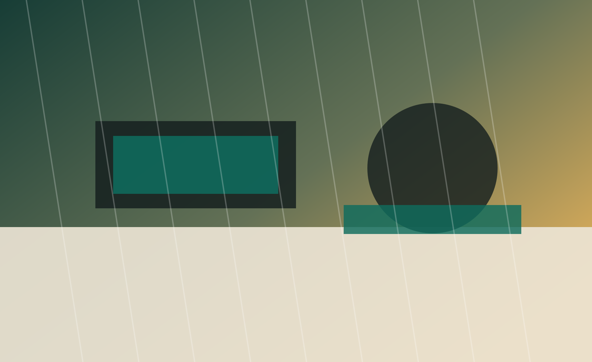
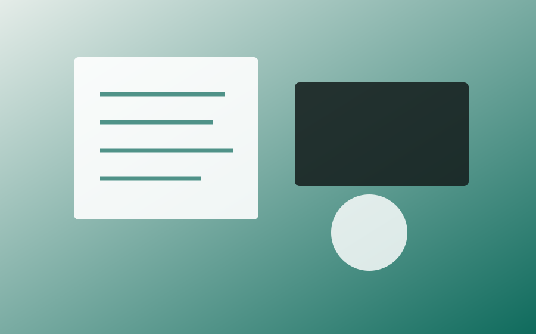
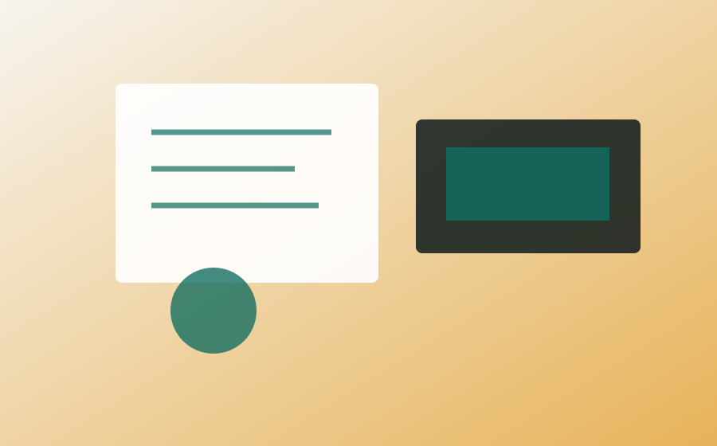

日中活動と作業支援
体調や得意なことに合わせて、軽作業や制作活動などに取り組めるよう支援します。

就労継続支援サービス
一人ひとりに合わせた支援
見学・相談から利用までサポート
Support
体調や得意なことに合わせて、軽作業や制作活動などに取り組めるよう支援します。
通所を通して生活のリズムを整え、安心して過ごせる毎日につなげます。
困りごとや将来の希望を伺いながら、次の目標を一緒に考えていきます。
Activities

集中しやすい環境を整え、できる作業から少しずつ参加できるようにします。

職員や利用者同士の関わりの中で、安心感や自信を育てていきます。
About
就労継続支援B型は、一般企業で働くことに不安がある方や、体調に合わせて働く練習をしたい方が利用できる福祉サービスです。 しぜん千田では、一人ひとりの気持ちやペースを大切にしながら、通うこと、作業すること、相談することを丁寧に支えます。
Contact
利用を迷っている方、ご家族、支援者の方もお気軽にご相談ください。